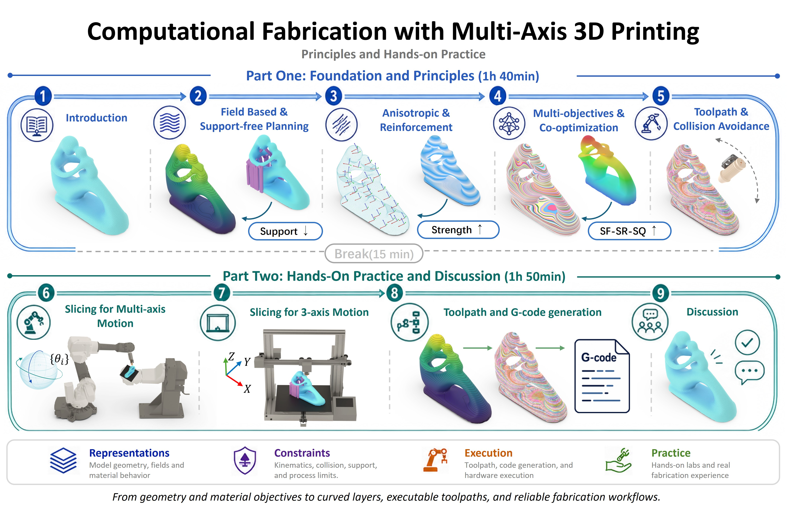
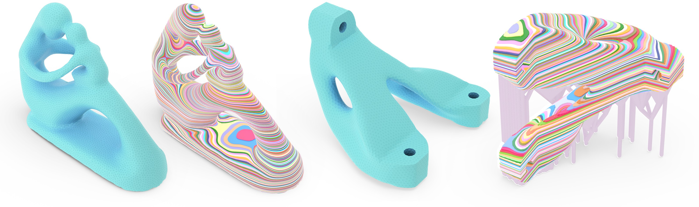

Representations
Model geometry, fields, and material behavior for multi-axis fabrication planning.
Foundations and Hands-on Practice
From geometry and material objectives to curved layers, executable toolpaths, and reliable fabrication workflows.

Course Snapshot
Model geometry, fields, and material behavior for multi-axis fabrication planning.
Reason about kinematics, collision, support, and process limits before printing.
Connect toolpaths, G-code generation, hardware execution, and hands-on fabrication experience.
Content and Results



Agenda
Foundation and principles: introduction, field-based and support-free planning, anisotropic reinforcement, multi-objective co-optimization, and collision-aware toolpaths.
Break: reset between concepts and hands-on planning.
Hands-on practice and discussion: slicing for multi-axis motion, slicing for three-axis motion, toolpath and G-code generation, and discussion.
SIGGRAPH Asia Context
The course is framed for SIGGRAPH Asia 2026 in Kuala Lumpur, connecting computational fabrication with the conference community around computer graphics, interactive techniques, robotics, AI, XR, and emerging creative technologies.
Visit SIGGRAPH Asia 2026Course Presenters
 CW
CW
The University of Manchester
 CD
CD
Centre for Perceptual and Interactive Intelligence, CUHK
 GF
GF
The Chinese University of Hong Kong
 ND
ND
The University of Manchester
 TL
TL
The University of Manchester